| xy default | xy loc="best" | matplotlib default (loc="best") | TanStack Charts default (top, reserved) |
|---|---|---|---|
| Lines that rise into the top-right corner | |||
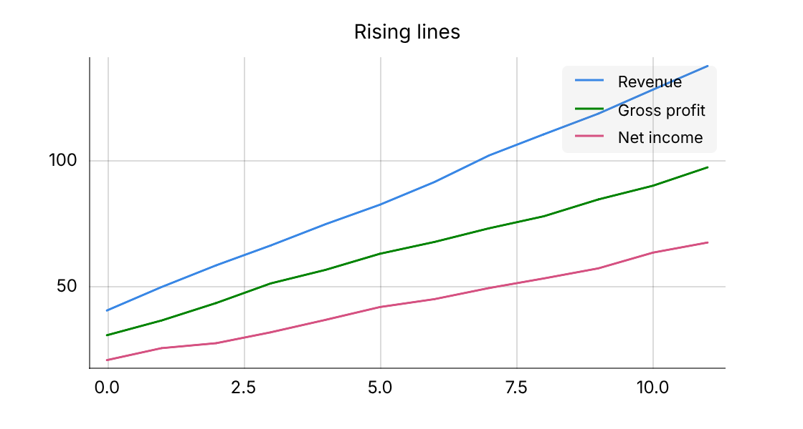 | 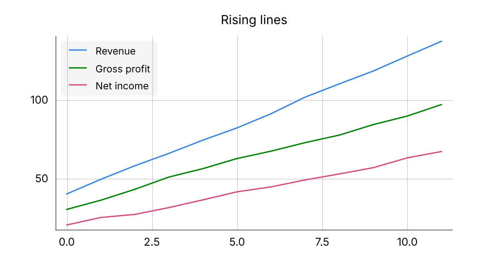 | 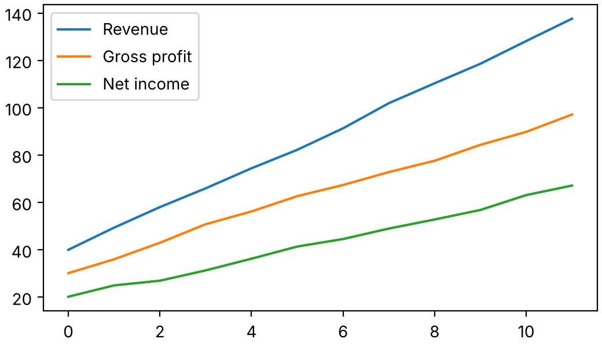 | 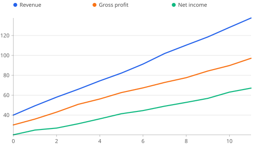 |
| 8 series | |||
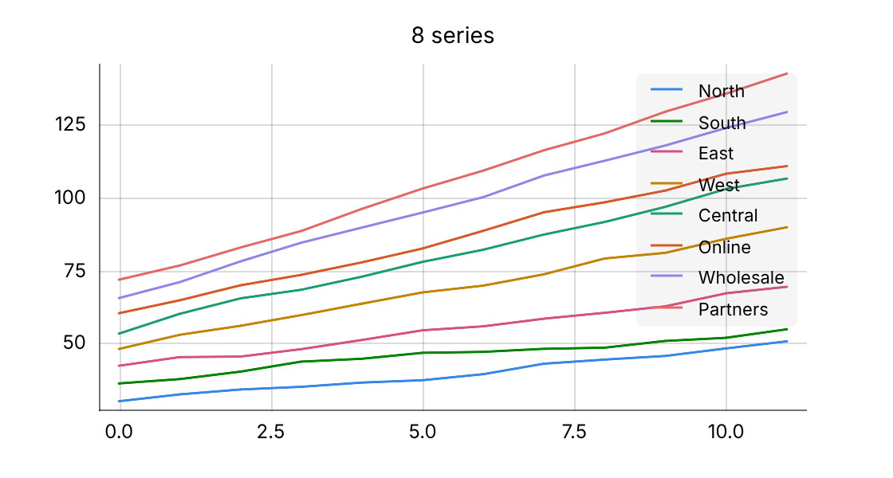 | 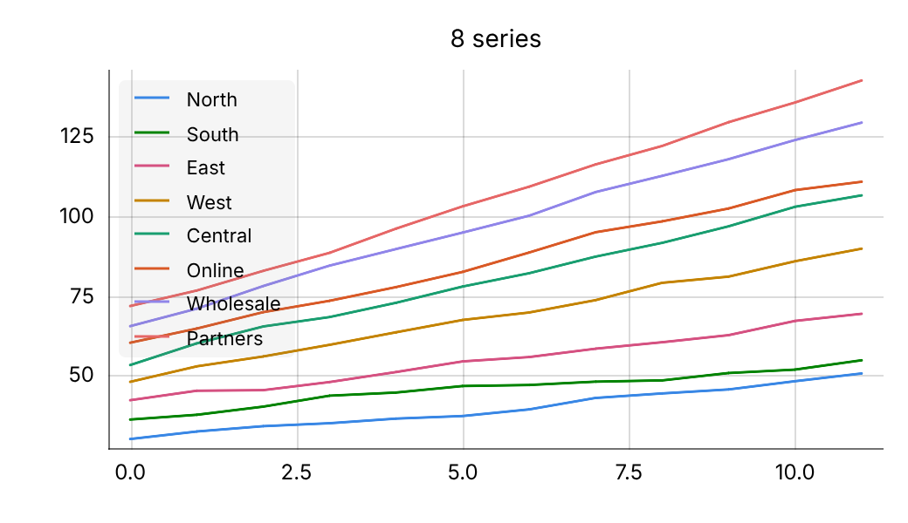 | 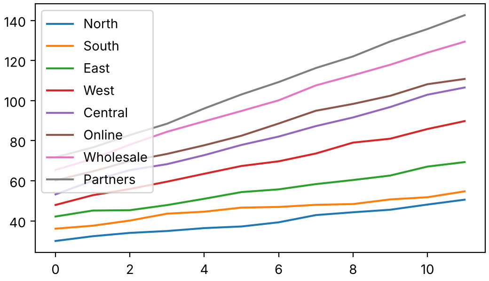 | 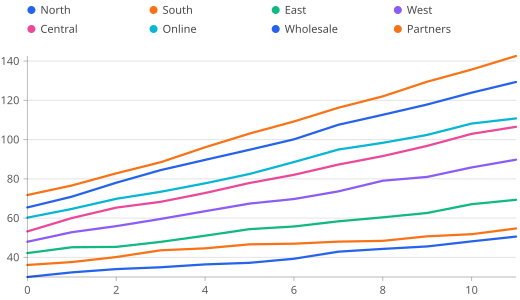 |
| Long series names | |||
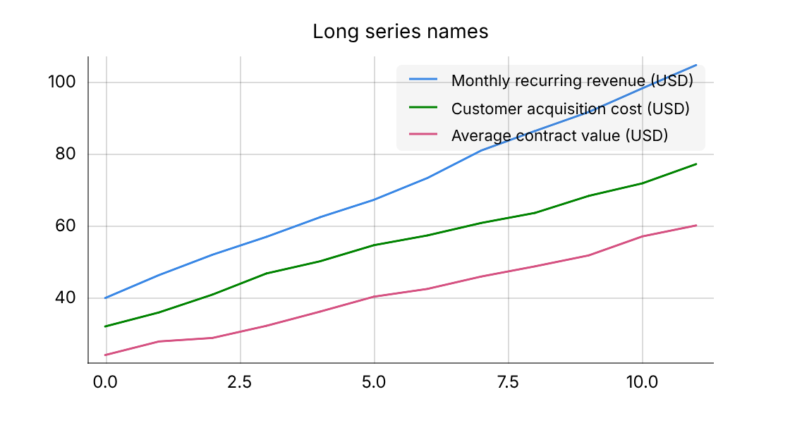 | 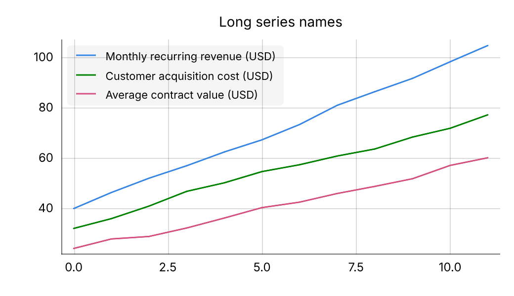 | 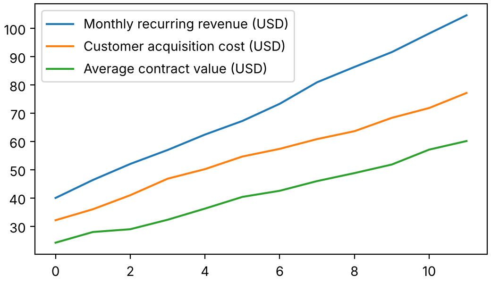 | 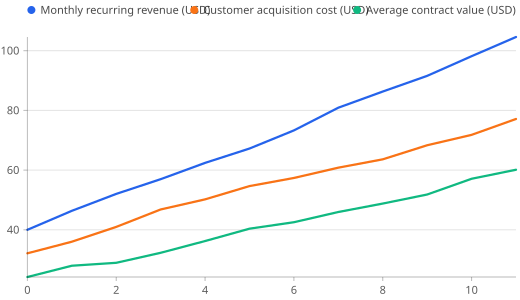 |
| Stacked area (no empty corner) | |||
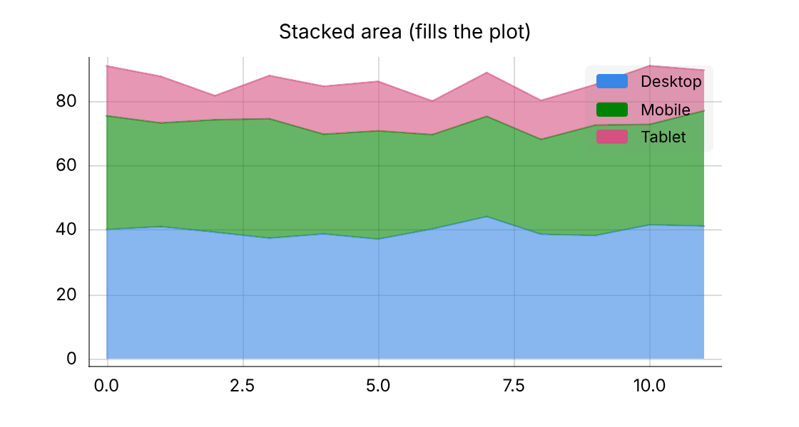 | 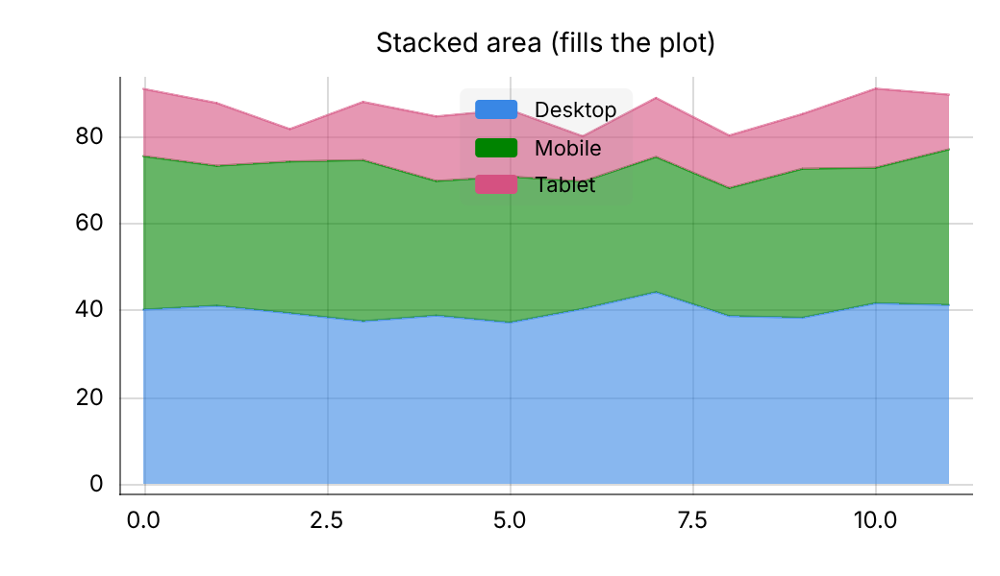 | 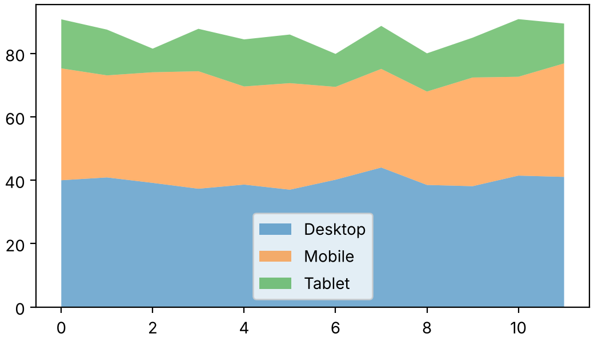 | 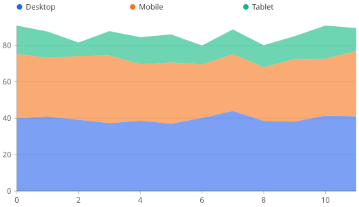 |
| Grouped columns, tallest on the right | |||
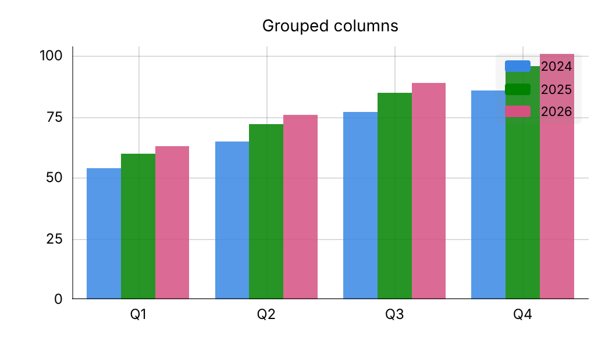 | 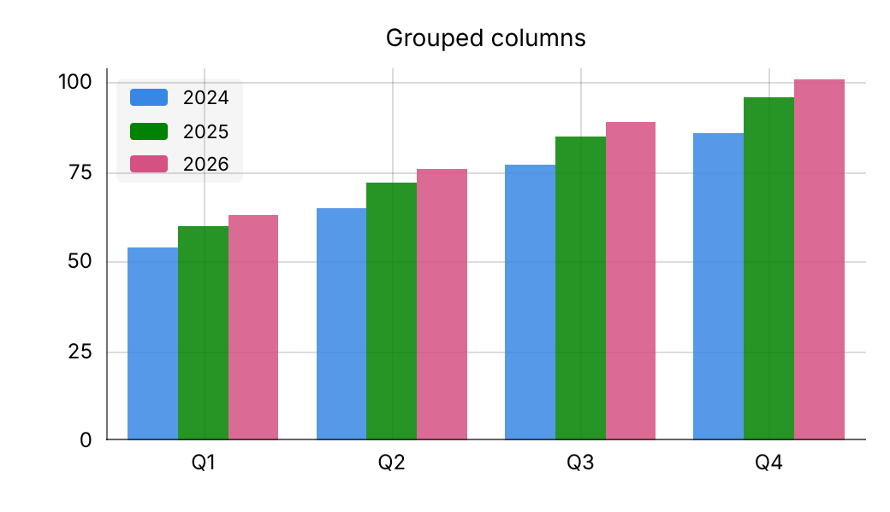 | 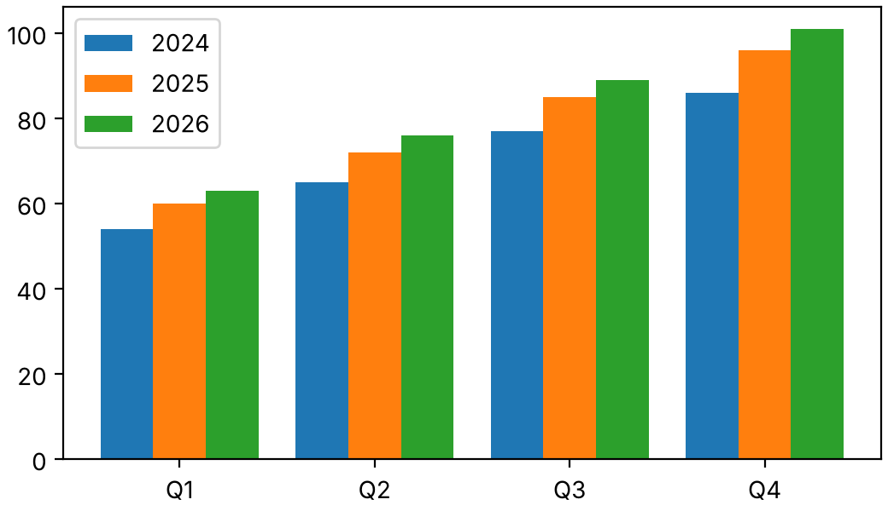 | 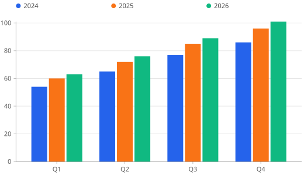 |
| Small 320x200 card | |||
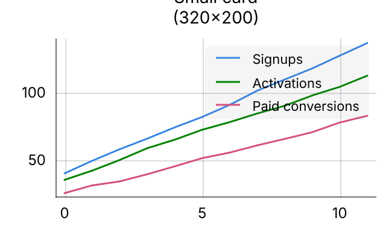 | 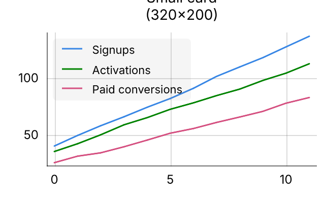 | 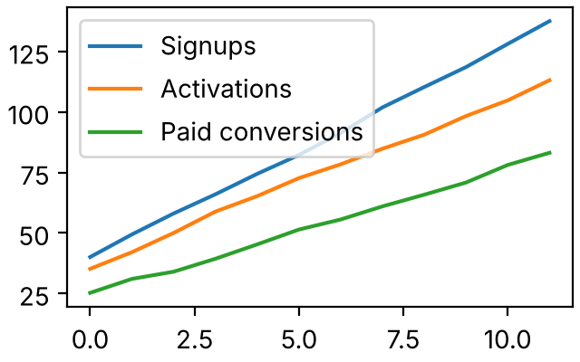 | 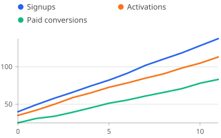 |